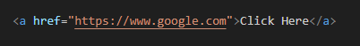
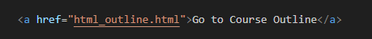
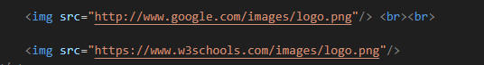

Links and Images
HTML HYPERLINKS
Hyperlinks are used to connect web pages together by linking text on one page with the same or different text on another webpage. With links in HTML you can link your webpage to other website such as Google, Wikipedia, Facebook and the likes. You also use links to link the different pages of your website together. So when you click on the links, it will take you to that specific page. Here is the Syntax:
<a href="URL">Text</a>
<a>: This defines an anchor tag. href: The href attribute indicates the link's destination. This is not visible to the reader.
The Text is the part visible to the user. When the user clicks on this text, he or she is directed to the linked page.
</a>: This is the closing of the anchor tag.
Here is an example of a link that leads to Google.

Click Here
Usually a link turns blue when the cursor is placed on it. However, this can be changed with CSS as you will learn later.
By default, links will appear as follows in all browsers:
HTML Links - The target Attribute
By default, the linked page will be displayed in the current browser window.
To change this, you must specify another target for the link.
The target attribute specifies where to open the linked document.
The target attribute can have one of the following values:
Click Here
In the above link, what was added to the previous code is: target="_blank" which will help direct the link to open in a new tab or window.
Absolute URLs vs. Relative URLs
An absolute URL contains all parts of a web address (protocol, domain name, path).
On the other hand, a relative URL does not contain the protocol and domain name.
It only includes the path information.
For instance, if we were using an image from a website called "example.com",
the absolute URL would look like this:
http://www.example.com/path/to/image.jpgWhile the relative URL would simply be:
/path/to/image.jpgThe relative URL can be used to link a page in the html folder on the current webpage
Example 1
The link below will take us to the HTML Course Outline Page of this website.

Go to Course Outline
Example 2
Let's say we want to include an image from Google. We could do so by using their
absolute URL:



Links can be used for images, email, buttons, navigation bar, list e.t.c